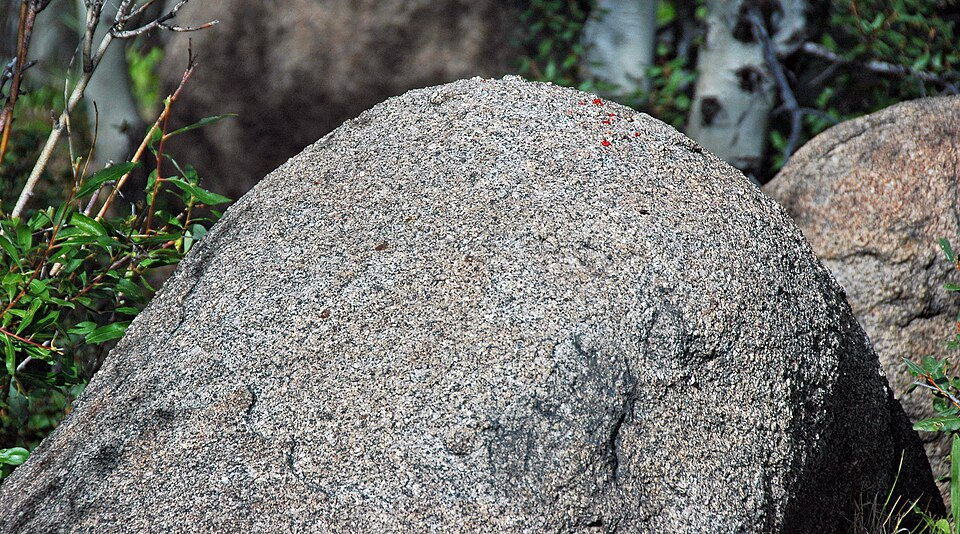
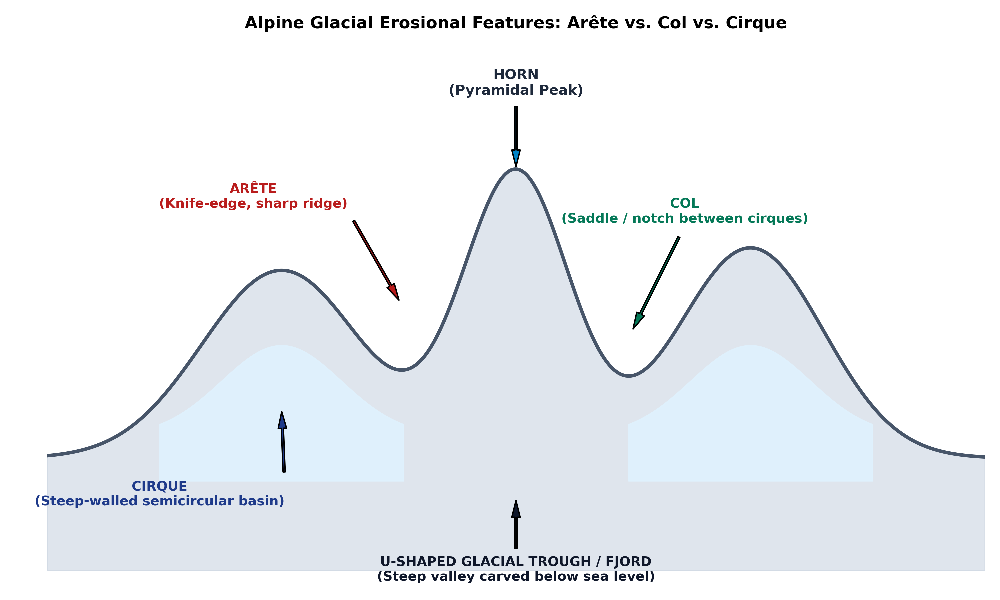
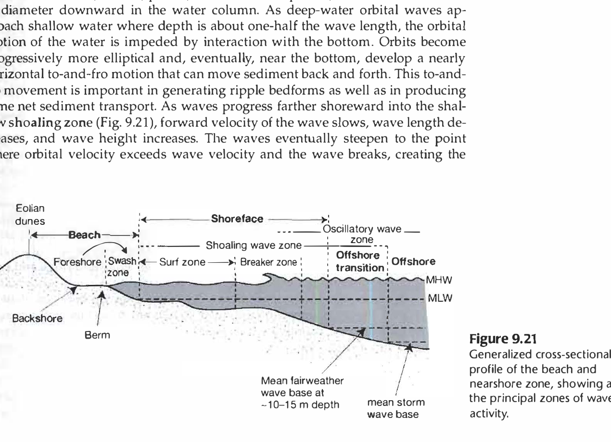
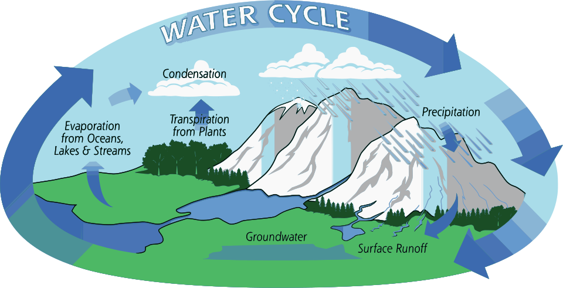
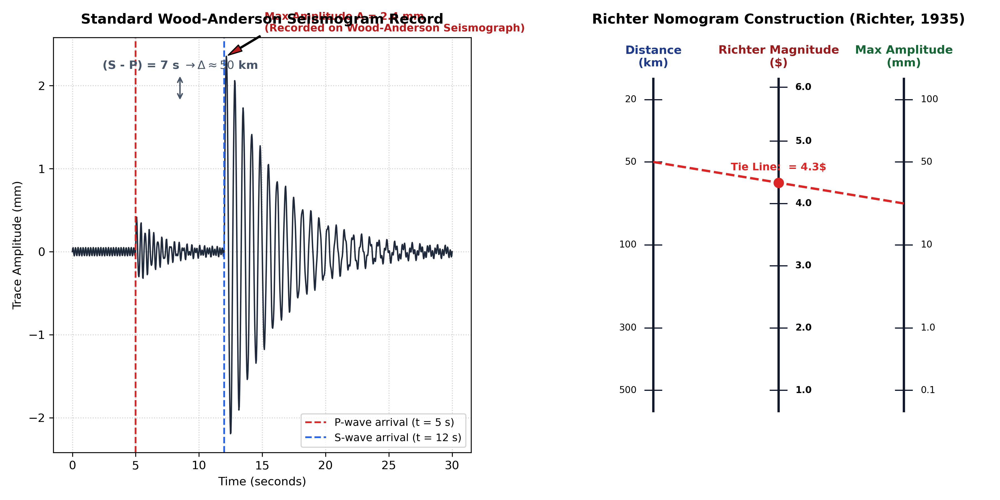

2.1 Weathering and Soil Formation


Weathering. Weathering is the natural process by which rocks exposed at or near the Earth's surface break down and decay under the influence of atmospheric agencies such as rain, wind, frost, temperature changes, and biological organisms. It operates through two complementary processes: (i) Physical Weathering (Disintegration) and (ii) Chemical Weathering (Decomposition).
- Goldich Stability Series (1938): Mineral resistance to chemical weathering is the exact inverse of Bowen's Reaction Series: Olivine < Ca-Plagioclase < Pyroxene < Amphibole < Biotite < Na-Plagioclase < K-Feldspar < Muscovite < Quartz.
- Hydrolysis of K-Feldspar to Kaolinite:
$$2\text{KAlSi}_3\text{O}_8 + 2\text{H}^+ + 9\text{H}_2\text{O} \longrightarrow \text{Al}_2\text{Si}_2\text{O}_5(\text{OH})_4\text{ (Kaolinite)} + 4\text{H}_4\text{SiO}_4 + 2\text{K}^+$$ - Fluvial Channel Sinuosity ($P$): Defined as $P = \frac{\text{Channel Length}}{\text{Valley Length}}$. Channels are Straight ($P < 1.05$), Sinuous ($1.05\text{--}1.5$), or Meandering ($P > 1.5$), while high bedload-to-discharge ratios produce Braided rivers (e.g., Brahmaputra–Ganges).
2.2 Physical Weathering
Physical weathering involves the mechanical breakdown of rocks into smaller fragments without altering their chemical composition:
(i) Frost Action (Frost Wedging). Water entering rock cracks expands by about 9% in volume upon freezing, exerting immense wedging pressure that splits even massive rocks in cold and mountainous regions.
(ii) Thermal Expansion & Exfoliation. Repeated diurnal heating and cooling in arid regions causes outer rock shells to expand and contract differently from the interior, peeling off concentric curved slabs (exfoliation).
(iii) Unloading (Pressure Release). Removal of overlying rock by erosion releases confining pressure on deep plutons, creating sub-horizontal sheet joints parallel to the topography.
(iv) Organic Activity. Expanding plant roots and burrowing organisms widen fractures and accelerate mechanical disintegration.
2.3 Chemical Weathering & Soil Profile

Chemical weathering alters unstable primary rock-forming minerals into stable secondary clay minerals, oxides, and dissolved ions through Solution (dissolution of calcite/halite by carbonic acid), Hydration (water absorption, e.g., anhydrite to gypsum), Hydrolysis (reaction of $\text{H}^+$ ions with feldspars to form kaolinite clay), Oxidation (rusting of iron-bearing silicates), and Carbonation. When jointed rock blocks are attacked chemically along intersecting cracks, their corners round off progressively, producing Spheroidal Weathering.
Soil Formation. The weathered regolith mixed with organic humus forms Soil. A mature soil profile displays distinct vertical horizons: A-Horizon (topsoil rich in humus, zone of leaching/eluviation), B-Horizon (subsoil enriched in clays and iron oxides, zone of accumulation/illuviation), C-Horizon (partially weathered parent rock fragments), resting upon unweathered Bedrock (R).
2.5 Geological Work of Wind


Wind is a powerful geological agent in arid and semi-arid deserts where vegetation is sparse:
Wind Erosion. Operates by Deflation (lifting and blowing away loose dust and sand, leaving desert pavements or deflation hollows) and Abrasion (sandblasting of rock outcrops by wind-borne quartz grains, producing Pedestal / Mushroom Rocks, faceted Ventifacts, and streamlined Yardangs).
Wind Transportation & Deposition. Wind transports sediment via traction (surface creep), saltation (bouncing grains within 1–2 m of the ground), and suspension (fine dust). Deposition builds Sand Dunes—crescent-shaped Barchans (horns pointing downwind), ridge-like Transverse Dunes, elongated Longitudinal (Seif) Dunes—and extensive blankets of wind-blown calcareous silt known as Loess.
2.10 Geological Work of Streams (Rivers)


Running water is the single most important exogenic agent shaping continental landscapes.
Stream Erosion. Streams erode their valleys through hydraulic action (force of moving water), abrasion / corrasion (grinding by rock load, forming Potholes), attrition (wear between colliding pebbles), and solution. Erosional landforms include V-shaped valleys, deep Gorges and Canyons, Waterfalls (where resistant caprock overlies softer beds), and River Terraces.
Stream Transportation & Deposition. Streams carry dissolved load, suspended load (silt/clay), and bedload (sand/gravel). Deposition occurs wherever velocity drops: at mountain fronts as Alluvial Fans and Bajadas; across valley floors as Floodplains, Natural Leeves, and Point Bars inside river Meanders (which may cut off to form Oxbow Lakes); and at river mouths as triangular Deltas (composed of topset, foreset, and bottomset beds).
Drainage Patterns. Dendritic (tree-like, on uniform rocks), Trellis (rectangular, on folded strata of alternating hard/soft beds), Radial (radiating from volcanic cones/domes), and Rectangular (controlled by intersecting joints/faults).
2.18 Geological Work of Glaciers and Oceans


Glaciers. Glaciers are slowly moving masses of recrystallized snow and ice classified into Valley (Alpine) Glaciers, Piedmont Glaciers, and Continental Ice Sheets. Glacial erosion (by plucking and abrasion) carves amphitheatre-shaped Cirques, knife-edge Arêtes, pyramidal Horns, flat-bottomed U-shaped Valleys, Hanging Valleys, and submerged coastal Fjords. Glacial deposits (drift) include unstratified Till / Moraines (lateral, medial, terminal), streamlined Drumlins, and stratified glaciofluvial Eskers, Kames, and Outwash Plains.
Work of the Sea. Ocean waves erode rocky coasts by hydraulic impact and abrasion, creating Sea Cliffs, Wave-Cut Platforms, Sea Caves, Sea Arches, and Sea Stacks. Longshore drift deposits Beaches, Spits, Bars, and Tombolos. In warm shallow tropical seas, coral polyps build Fringing Reefs, Barrier Reefs, and ring-shaped Atolls.
2.33 Groundwater Hydrogeology



- Darcy's Law (1856): Groundwater discharge through a porous medium is $Q = -K A \frac{dh}{dl}$, where $K$ is hydraulic conductivity (m/day) and $\frac{dh}{dl}$ is the hydraulic gradient.
- Ghyben-Herzberg Relation: In coastal aquifers, the depth to the saline interface below sea level is $z \approx 40\,h_f$, where $h_f$ is the freshwater head above sea level.
Groundwater is subsurface water occupying pore spaces and fractures beneath the surface. Below the unsaturated Zone of Aeration (Vadose Zone) lies the Zone of Saturation, whose upper boundary is the Water Table. Permeable rock or sediment formations that store and yield economic quantities of water (such as sand, gravel, sandstone, and fractured limestone) are called Aquifers, whereas impermeable clay or shale layers are Aquicludes. When water is trapped under pressure between two impermeable beds, drilling into it produces a flowing Artesian Well.
Karst Topography. In limestone terrains, groundwater solution carves surface Sinkholes (Dolines), disappearing streams, and underground caverns decorated with icicle-like Stalactites (hanging from ceilings) and floor-built Stalagmites.
2.35 Earthquakes and Volcanoes


$$V_p = \sqrt{\frac{K + \frac{4}{3}\mu}{\rho}}, \qquad V_s = \sqrt{\frac{\mu}{\rho}}$$
Note that fluids have $\mu = 0$, so S-waves cannot travel through the liquid outer core.
Earthquakes. An earthquake is a sudden trembling of the Earth's crust caused by elastic energy release along an active fault or volcanic eruption. The subsurface point of origin is the Focus (Hypocentre), and the point vertically above it on the surface is the Epicentre. Seismographs record primary longitudinal P-waves (fastest, travel through solids and liquids), secondary transverse S-waves (solids only), and destructive surface L-waves (Love & Rayleigh). Magnitude is measured on the logarithmic Richter Scale, while damage intensity is rated on the Modified Mercalli Scale.
While the Richter Local Magnitude ($M_L$) saturates above $M \approx 6.5$, modern seismologists use the Moment Magnitude ($M_w$) derived from physical fault slip:
$$M_0 = \mu A D, \qquad M_w = \frac{2}{3}\log_{10}(M_0) - 10.7$$where $\mu$ is rock shear rigidity, $A$ is fault rupture area, and $D$ is average fault displacement. Each $+1.0$ unit increase in magnitude releases $\sim 31.6\times$ more seismic energy.
Volcanoes. A volcano is a vent through which molten magma, pyroclastic ash, and gases erupt onto the surface. Volcanic landforms include gentle basaltic Shield Volcanoes, steep explosive Composite Stratovolcanoes, and giant collapse Calderas.
Chapter Review Questions (K. M. Bangar)
1. Define weathering. Describe the processes of physical and chemical weathering and explain the formation of a mature soil profile.
2. Describe the erosional and depositional landforms produced by wind, rivers, and valley glaciers.
3. Define water table and aquifers. Distinguish between unconfined and confined (artesian) aquifers and explain karst topography.
4. What are earthquakes? Explain focus, epicentre, seismic waves (P, S, and L), and how earthquakes are recorded and measured.
5. Describe the structure of a volcano, types of volcanic eruptions, and major volcanic landforms.
Visual Reference Gallery (Clean Color Diagrams & Specimens)
Supplementary full-color diagrams from Winter, Perkins, Fossen, Boggs and high-resolution USGS/Wikimedia photographs replacing scanned textbook drawings.


